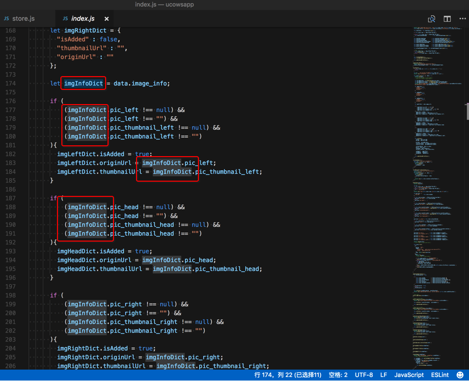
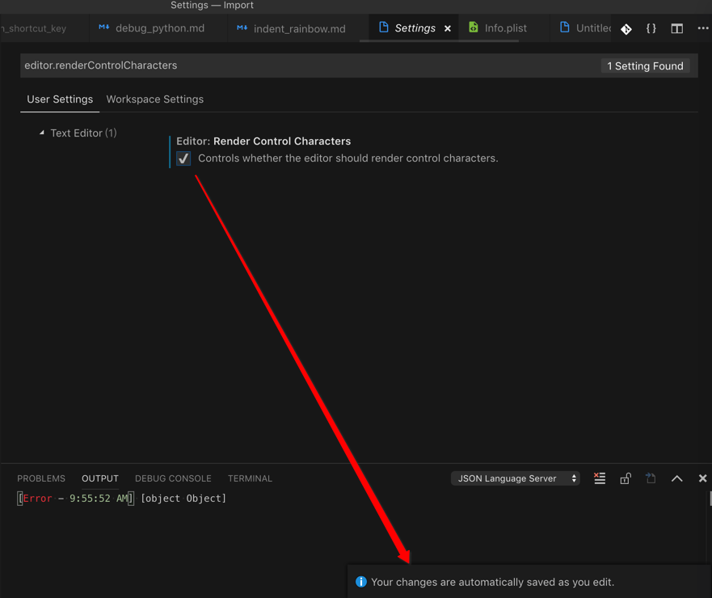
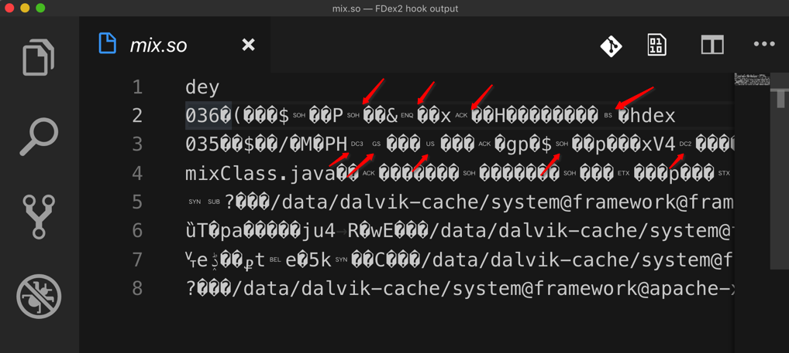
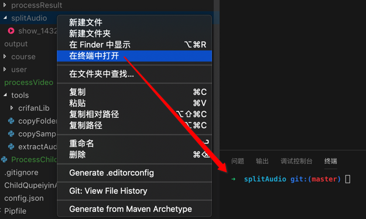

代码编辑器常用功能
选中自动高亮
VSCode编辑器支持常见的，很方便的一个功能是：双击文字（变量），自动高亮其他部分的对应文字（变量）

-》对于编写代码期间查看变量或函数的调用，很方便。
支持不同主题和字体
显示特殊的不可见的控制字符
设置显示控制字符：
Code->首选项->Settings->搜 editor.renderControlCharacters -> 勾选：Editor: Render Control Characters 中的 Controls whether the editor should render control characters

效果：

详见：
【已解决】VSCode中显示特殊的不可见的控制字符
设置Tab的宽度=空格的个数
Code-》首选项-》设置-》点击：
// 一个制表符等于的空格数。该设置在 `editor.detectIndentation` 启用时根据文件内容进行重写。
"editor.tabSize": 4,
左边的编辑按钮 -》复制到设置-》把4改为2:
"editor.tabSize": 2
即可立刻生效：按Tab后，缩进就从4个空格的宽度，变成2个空格的宽度了。
详见：【已解决】VSCode中如何设置Tab缩进为2个空格而不是4个空格的宽度
其他方便好用的功能
快速在终端中打开文件夹
右键某文件夹 -》 在终端中打开

则可以直接快速调用内置终端打开对应文件夹，然后就可以继续在终端中做事情了，比如此处去用ffmpeg分割mp3。